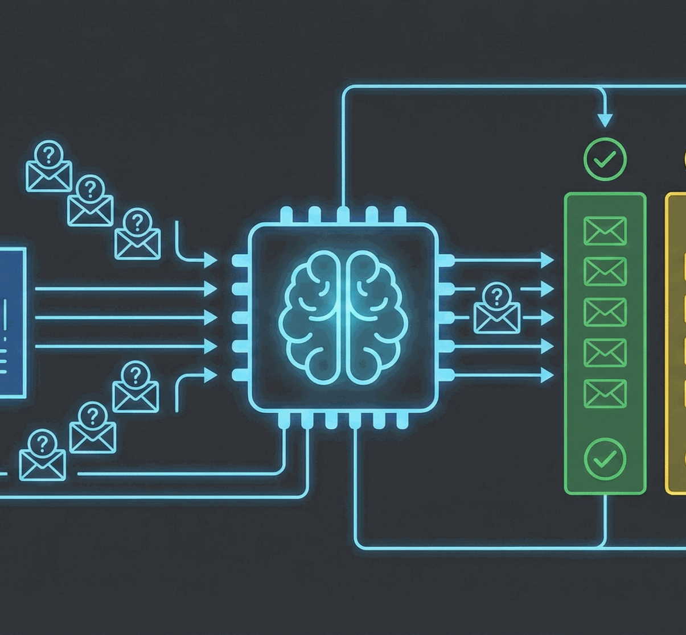
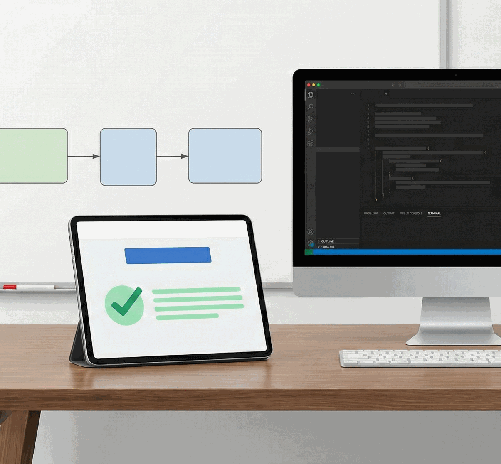
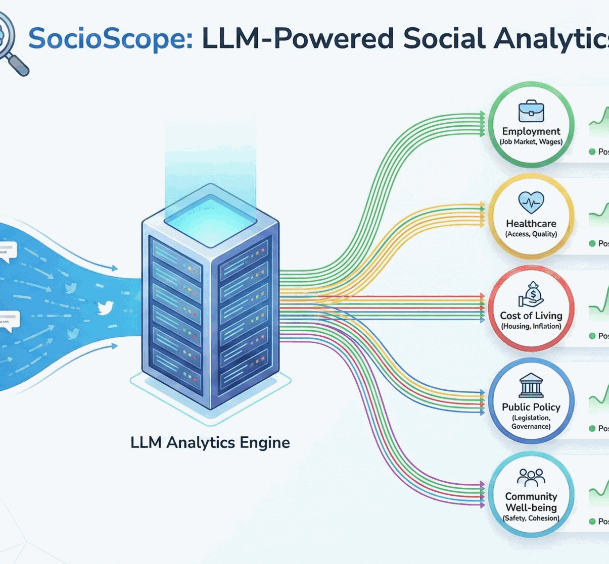
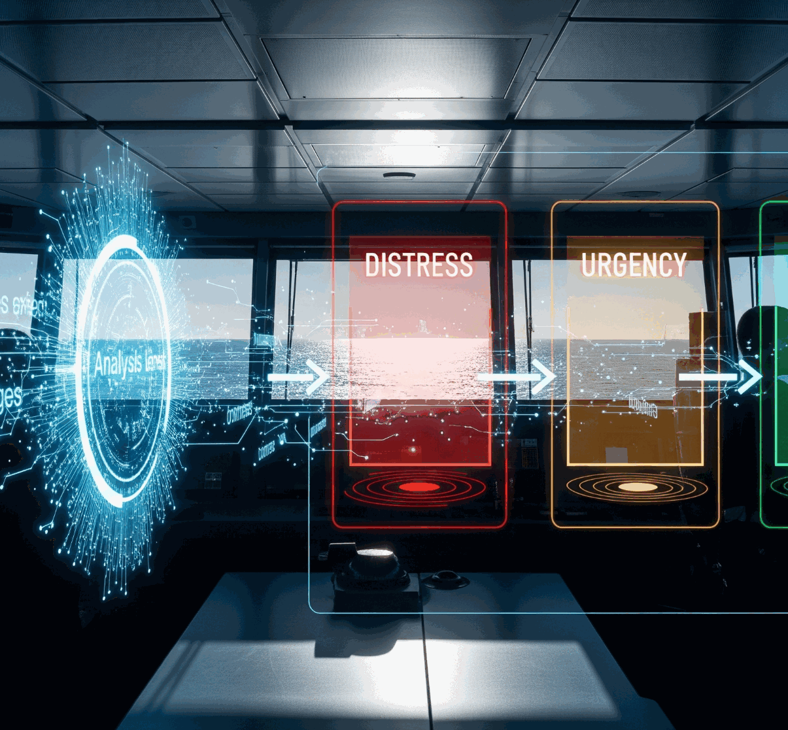
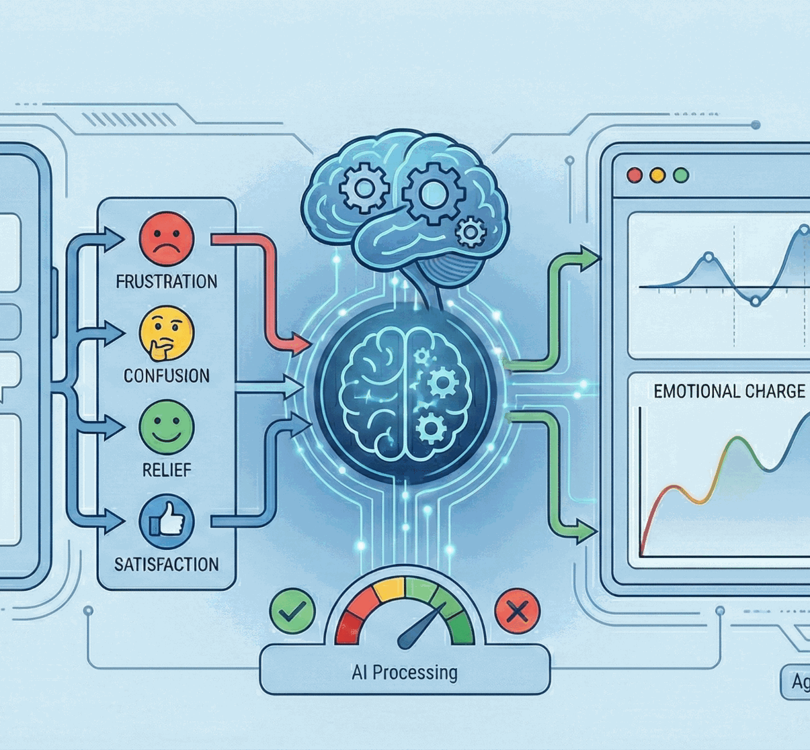

Course: Large Language Models & Agents
School of Computer Science, Holon Institute of Technology
2025 Fall
Lecturer: Dr. Alexander(Sasha) Apartsin
HoS Course Series Home: Here
StudenT Projects
SkillSight
Uncovering hidden talent through contextual résumé intelligence
Yonatan Elman, Michael Kovalchuk, Roni Fadlon
Traditional résumé parsers depend on explicit keywords, missing many competencies that candidates demonstrate indirectly through their achievements and responsibilities. SkillSight addresses this gap by modeling contextual cues, domain conventions, and action–outcome patterns to infer implicit skills that are not explicitly stated in the résumé. The system transforms unstructured narrative text into a richer skill representation that better reflects a candidate’s true capabilities.

AnySys Triage
One model. Any system. Accurate triage
Amit Hazan, Lior Mizrahi, Abed Haj
A universal support-ticket triage model that adapts instantly to any software or hardware ecosystem by ingesting the system’s documentation and workflow. It classifies incoming tickets by severity and accurately identifies the underlying components, enabling fast, consistent resolution across diverse systems.
RegUlAItion
Clarity in every decision, confidence in every action
Ohad Biton, Michael Naftalishen, Yossi Okropiridze
An AI-driven decision-support system that helps banking clerks determine whether a customer request, transaction, or operational action is permissible under complex and evolving regulatory frameworks. The system interprets multilayered rules, exceptions, and compliance constraints, providing clear, consistent, and auditable guidance for each case.

CriteriaGradeLLM
Structured evaluation for open-question CS assessments
Uriel Coehn, Natan Bar, Tomer Bengaev
CriteriaGradeLLM is an LLM-based grading system that evaluates computer-science students’ open-question answers using a transparent rubric of 5–10 criteria. It examines conceptual correctness, technical precision, completeness of the response, quality of reasoning, and the relevance of supporting examples. The model generates consistent scores and concise feedback, enabling scalable, fair assessment across large classes while maintaining precise alignment with instructional goals.

SOCIOSCOPE
Real-time insight into society’s shifting sentiments
Uriel Cohen, Natan Bar, Tomer Bengaev
SocioScope is an LLM-driven analysis system that processes large volumes of Twitter content to reveal public sentiment on key social, economic, and political issues such as healthcare, education, employment, and cost of living. By identifying issue-specific aspects and evaluating sentiment toward each, the system provides a structured, real-time view of how populations react to ongoing events and policy discussions. SocioScope helps researchers and decision-makers track opinion trends, detect emerging concerns, and understand the factors shaping public discourse across diverse societal domains.

SEA ALERT
Understanding Maritime Urgency Through Text
Tomer Atia, Ilana Estrin
This project builds an automated text-analysis system that classifies maritime messages into distress, security, and routine categories based solely on their content. The model learns linguistic patterns, urgency markers, and domain-specific phrasing typical of maritime communication, enabling it to distinguish life-threatening distress calls from security alerts and routine operational messages. By relying solely on textual cues, the system provides a lightweight, reliable tool for improving message triage and enhancing maritime safety communication workflows.

EmotiSupport
Detecting customer emotions to improve support interactions.
Lior Tsvieli, Yoni Libman, Yuval Reznik
EmotiSupport is an emotion-analysis system designed for technical support messages and conversational logs. It interprets the emotional tone behind customer statements such as frustration, confusion, relief, or satisfaction—and links these signals to the progression of the support interaction. By analyzing language patterns common in troubleshooting dialogues, the system highlights emotionally charged moments, identifies escalation risks, and provides actionable insights for improving response strategies and overall service quality.
CaterExtract
From negotiation emails to structured catering deals.
Arkady Doktorovich, Guy Yogev, Hen Mandelbaum
CaterExtract analyzes multi-email negotiation threads between clients and catering providers and automatically extracts the key deal parameters. The system converts unstructured, evolving email conversations into a structured deal representation, enabling fast review, comparison, and downstream processing.